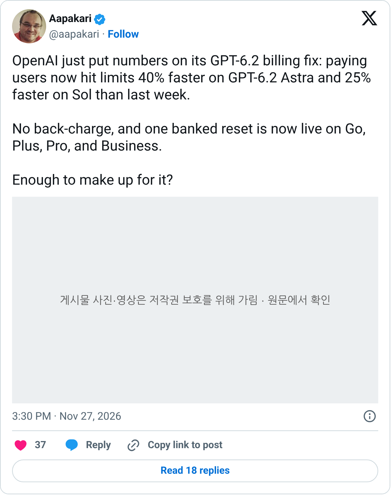

오픈AI가 말한 것은 정확히 무엇이고, 어디에 적혀 있나?
게시물 요지는 아스트라 40%·솔 25%, 과거 사용분 미청구, 이월 리셋 1회입니다. 게시 시각은 2026년 11월 26일 11:50(KST)이고, 대상은 ‘대부분의 이용자’입니다.
편집부는 2026년 11월 28일 KST에 엑스 공개 페이지에서 전문을 읽고, 블리핑컴퓨터(BleepingComputer)의 인용과 글자 단위로 대조했습니다.
같은 게시물은 다른 모델은 영향이 없고, 지난 사용분의 차액은 청구하지 않으며, 그래도 이전 세대인 GPT-6 아스트라·GPT-6.1 솔보다는 한도가 더 멀리 간다고 적었습니다.
2026년 11월 28일 13시대 KST에 연 챗GPT 릴리스 노트의 최신 항목은 11월 23일이었고, 이 변경은 없었습니다.
이 소식은 어디서 시작됐나?

스탯츠와이어는 오픈AI 게시물이 나온 지 약 5시간 뒤에 같은 숫자를 목록으로 옮겼습니다. 스탯츠와이어(Stats Wire)는 프로필에서 AI 엔지니어라고 밝힌 계정으로, 구글이 제미나이 4 네온(Gemini 4 Neon)을 더 빠르게 하면서 쿼터 소모량은 줄이고 있다는 취지의 문장을 덧붙였습니다.
원문은 “REDUCING quota consumption”입니다.
구글이 네온의 쿼터 소모를 줄였다는 말은 이 게시물에서만 확인됩니다.
구글 발표문은 Tasks 기능에서 한도를 더 오래 쓴다고만 적어, 이 글은 앱 전체로 일반화하지 않습니다.
40%와 25%는 쓸 수 있는 양을 얼마나 줄이나?
같은 한도로 하던 일이 아스트라는 약 29%, 솔은 20% 줄어든다고 읽는 것이 가장 자연스럽습니다. 오픈AI는 “the same work will use more of your plan’s usage allowance”(같은 작업이 요금제 한도를 더 많이 쓴다)고 적었으므로, 같은 일에 드는 한도가 1.4배(아스트라), 1.25배(솔)가 됩니다.
이를 ‘해석 A’라 하고, ‘한도에 닿는 시간이 40%·25% 줄었다’로 읽으면 ‘해석 B’입니다.
어느 쪽인지 오픈AI는 밝히지 않았습니다.
| 모델 | 해석 A 증감 | 해석 B 증감 |
|---|---|---|
| 아스트라 | -29% | -40% |
| 솔 | -20% | -25% |
표는 변경 전 쓸 수 있는 양을 100%로 두고 편집부가 계산한 증감입니다. 해석 A에서는 아스트라 100%→71%(1÷1.4), 솔 100%→80%(1÷1.25)가 남고, 해석 B에서는 60%와 75%가 남습니다.
요금제별로 쓸 수 있는 양은 얼마나 줄었을까?
표는 요금제마다 한국 앱스토어 표시가와 쓸 수 있는 양의 변화를 한 줄씩 비교합니다. 한국 가격은 앱스토어 ‘앱 내 구입’ 목록을 2026년 11월 28일 KST에 읽은 값입니다.
목록에는 결제 주기가 적혀 있지 않지만, Go 도움말은 연간 결제와 여러 달 선결제는 Go·Plus·Pro 모두 없다고 적어, 29,000원을 월 가격으로 읽었습니다.
| 요금제 | 월 표시가(원) | 변화(A) |
|---|---|---|
| Go | 13,000 | 해당 없음 |
| Plus | 29,000 | 아스트라 -29% / 솔 -20% |
| Pro 100 | 159,000 | 같은 비율(가정) |
| Pro 200 | 299,000 | 같은 비율(가정) |
| Pro 500 | 790,000 | 같은 비율(가정) |
챗GPT Work·코덱스 요금 문서의 이용 가능 요금제에는 Go가 없고, Go의 코덱스는 GPT-6 루나(Luna)만 적혀 있습니다.
오픈AI는 다른 모델은 영향이 없다고 밝혔습니다.
오픈AI가 Go를 영향 대상에서 뺐다고 말한 적은 없으며, 위는 문서에 대상 모델이 없다는 뜻입니다.
Pro 세 등급은 감소 비율을 같다고 가정한 것이고, 절대량은 미확인입니다.
Plus는 숫자가 공개돼 있습니다.
같은 요금 문서는 Plus의 5시간당 로컬 메시지 추정을 GPT-6.2 아스트라 6~50회, 솔 17~180회로 적고, GPT-6 아스트라는 5~45회, GPT-6.1 솔은 15~160회로 적습니다.
이 표가 변경 후 값이라면 6~50회가 곧 현재 한도입니다.
변경 전 값으로 거꾸로 계산하면(해석 A) 아스트라 약 8~70회, 솔 약 21~225회였습니다.
- Pro는 요금 문서에 5시간 한도가 없고, 리셋 도움말에 주간 한도가 있는데, 그 크기는 공개되지 않았습니다.
- Pro 100·500의 Work·Codex 허용량은 릴리스 노트에 따라 2026년 10월 29일 두 배가 됐습니다. 이번 감소보다 먼저 있었던 일이라 계산에 넣지 않았습니다.
- 오픈AI는 영향 대상을 “대부분의 이용자”로 적었습니다. 영향을 받지 않는 이용자가 누구인지는 밝히지 않았습니다.
보상 리셋은 얼마나 도움이 되나?

이월 리셋 1회는 한 주기 한도를 되돌려 주지만, 줄어든 만큼을 영구히 메우지는 않습니다. 소티오는 사과의 뜻으로 Go·Plus·Pro·Business 이용자에게 이월 리셋(banked reset) 1회를 넣는다고 적었습니다.
코덱스 리셋 도움말은 이런 리셋이 한도를 영구히 늘리지 않는다고 설명합니다.
- 되돌리는 한도: Go는 월간, Plus는 5시간·주간, Pro 100·200·500은 주간 한도입니다.
- 조건: 이월 리셋을 쓰려면 적용 대상 한도 중 하나가 80% 미만으로 남아 있어야 합니다. 데스크톱 앱·웹·코덱스 CLI에서 쓰고, 모바일 앱에서는 못 씁니다.
- 만료일: 도움말은 계정에 표시된 만료일 안에 써야 한다고만 적었습니다. 블리핑컴퓨터는 자기 계정에서 한 달 뒤 만료로 보였다고 전했을 뿐이어서 이 글은 일반화하지 않습니다.
한 주기 한도를 모두 쓴 상태에서 리셋을 쓰면 변경 후 한도 한 주기분이 돌아옵니다.
해석 A에서 그 양은 변경 전 일의 71%(아스트라)·80%(솔)이고 주기마다 29%p·20%p씩 덜 하게 되므로, 리셋 1회는 최대 약 2.5주기(71÷29)·4주기(80÷20)의 감소분을 메웁니다.
해석 B에서는 1.5주기(60÷40)·3주기(75÷25)입니다.
쓴 만큼만 복구되고 한 번뿐이어서 실제로는 이보다 적습니다.
제미나이·클로드 요금제와 비교하면 어떤가?
두 서비스는 요금제 배수만 밝히고 횟수는 공개하지 않아, 오픈AI의 6~50회와 직접 비교할 수 없습니다. 가격은 미국 달러 정가이고, 원화는 2026년 11월 27일 환율(1달러=1,334.9원, Frankfurter)로 편집부가 환산한 값이라 세금·앱스토어 가산은 빠져 있습니다.
| 요금제 | 월 정가 | 한도 표기 |
|---|---|---|
| 챗GPT Plus | 20달러 | 5시간 횟수표 |
| 챗GPT Pro | 100달러 | 주간 한도만 |
| 제미나이 Pro | 19.99달러 | 무료의 4배 |
| 제미나이 Ultra | 99.99달러 | Pro의 5배 |
| 클로드 Pro | 20달러 | 기준 1배 |
| 클로드 Max | 100달러 | Pro의 5배 |
| 클로드 Ultra | 200달러 | 주간 10배 |
원화 환산은 20달러 약 26,700원, 19.99달러 약 26,700원, 100달러 약 133,500원, 200달러 약 267,000원입니다.
표의 가격은 각 요금제의 가장 싼 등급입니다.
챗GPT Pro는 100·200·500달러, 제미나이 Ultra는 99.99달러(Pro의 5배)와 199.99달러(Pro의 20배), 클로드 Ultra는 Pro의 주간 10배이고 인증 계정은 5시간 한도가 없습니다.
클로드 프로는 연간 결제 때 월 17달러입니다.
챗GPT 달러 가격은 Go 출시 공지와 Pro 도움말이, 나머지는 제미나이 구독 페이지, 구글 AI 요금제, 제미나이 앱 한도 도움말, 클로드 요금제 페이지가 근거입니다.
제미나이 AI 플러스는 4.99달러에 무료의 2배 한도지만 네온은 쓸 수 없고, 네온은 프로 이상에서 씁니다(구글 발표). 구글은 알림 없이, 앤트로픽은 재량으로 한도를 바꿀 수 있다고 각각 제미나이 도움말과 클로드 한도 도움말에 적었습니다.
챗GPT Plus의 한국 앱스토어 표시가는 29,000원입니다.
이번에 한도 소모 속도 변경을 책임자가 인정한 곳은 오픈AI뿐입니다.
확인 현재까지 확인된 내용
2026년 11월 28일 13~14시대 KST에 다음을 직접 열어 대조했습니다.
소티오의 엑스 게시물(전문, 공개 페이지), 소티오 직함을 적은 와이어드(2026년 6월 11일)·테크크런치(2026년 8월 25일) 인터뷰, 챗GPT 릴리스 노트, 이월 리셋 도움말, Pro 등급 도움말, Work·코덱스 요금 문서, Go 도움말, 한국 앱스토어 목록, 제미나이·클로드의 가격과 한도 페이지입니다.
블리핑컴퓨터 보도는 인용문 대조에 썼습니다.
엑스 게시물 2건은 스탯츠와이어(게시 2026년 11월 26일 16:59 KST)와 아파카리(게시 2026년 11월 27일 15:30 KST)입니다.
미확인 아직 확인하지 못한 것
- ‘40% 더 빨리’가 해석 A인지 B인지는 미확인입니다. 요금 문서의 6~50회가 변경 후 값인지도 오픈AI가 밝히지 않았습니다. 이전 세대(5~45회)보다 크다는 점이 변경 후 값이라는 정황일 뿐입니다.
- 챗 탭 GPT-6.2에도 이번 정정이 적용되는지는 게시물과 문서에 없어 미확인입니다.
- Pro·Business의 주간 한도 절대량은 미확인입니다.
- 이월 리셋의 한국 계정 지급 여부와 일반 만료일은 미확인입니다.
- 구글이 네온의 쿼터 소모를 줄였다는 주장은 Tasks 기능 외에는 미확인입니다.
- 앱스토어 목록 자체에는 Plus 29,000원의 결제 주기가 없고, 같은 목록의 ‘ChatGPT Plus 299,000원’ 항목이 무엇인지도 적혀 있지 않습니다.
- 제미나이·클로드의 한국 원화 공식 가격은 확인하지 못해 환율로 환산했습니다.
누가 알렸나?
| 누구 | 소개 | 역할 |
|---|---|---|
| 소티오 | 핵심 제품 총괄 | 변경 발표 |
| 스탯츠와이어 | 프로필, 미확인 | 숫자 확산 |
| 아파카리 | 프로필, 미확인 | 리셋 정리 |
| 블리핑컴퓨터 | IT 매체 | 인용 대조 |
스탯츠와이어·아파카리의 소개는 프로필 자기소개이며 진위는 미확인입니다. 소티오의 직함은 위 와이어드·테크크런치 인터뷰에서 확인했습니다.
자주 묻는 질문
구독료가 그대로인데 왜 사실상 오른 셈인가요?
값은 그대로지만 같은 아스트라 작업이 한도를 1.4배(해석 A) 쓰기 때문입니다. 변경 전과 같은 양을 하려면 한도당 값으로 따져 Plus 29,000원이 약 40,600원짜리 한도와 같아집니다. 편집부의 환산이고, 실제 청구액은 아닙니다.
이미 쓴 사용분까지 소급해서 계산되나요?
소급 청구는 없습니다. 이미 쓴 양을 새 기준으로 다시 계산하는지는 소티오 게시물에 없습니다.
이월 리셋은 어디서 쓰나요?
웹은 사용량(Usage) 설정, 데스크톱 앱은 설정의 사용량·결제(Usage & billing)에서 ‘리셋 1개 가능’을 눌러 확인합니다. 코덱스 CLI에서는 /usage로 쓸 수 있습니다.
Go 요금제를 쓰는데 영향이 있나요?
Go는 아스트라·솔을 쓰지 못해 소모 속도는 그대로이고, 리셋은 월간 한도에 적용됩니다.
참고 자료
- 티보 소티오 엑스 게시물(2026-11-26 11:50 KST)
- 스탯츠와이어 엑스 게시물(2026-11-26 16:59 KST)
- 아파카리 엑스 게시물(2026-11-27 15:30 KST)
- 블리핑컴퓨터: OpenAI warns GPT-6.2 Astra will hit usage limits 40% faster(2026-11-26)
- 와이어드: Meet the OpenAI Engineer Leading ChatGPT’s Biggest Transformation Yet(2026-06-11)
- 테크크런치: An interview with OpenAI head of product Thibault Sottiaux(2026-08-25)
- 오픈AI 도움말: ChatGPT 릴리스 노트
- 오픈AI 도움말: How resets work in Codex
- 오픈AI 도움말: About ChatGPT Pro tiers
- 오픈AI 도움말: What is ChatGPT Go?
- 챗GPT Work·코덱스 요금 문서: Pricing(ChatGPT Learn)
- 오픈AI 공지: ChatGPT Go 전 세계 출시(2026-01-16)
- 한국 앱스토어 챗GPT 앱 정보(앱 내 구입 목록)
- 구글: 제미나이 구독
- 구글: Google AI 요금제
- 구글: 제미나이 앱 한도 도움말
- 구글: Gemini 4 Neon 발표(2026-11-18)
- 앤트로픽: 클로드 요금제
- 앤트로픽: Claude 프로 도움말
- 앤트로픽: Claude 맥스 도움말
- 앤트로픽: Claude 사용·길이 한도 도움말
- Frankfurter 환율 API(2026-11-27 기준 1달러=1,334.9원)
관련 글
글: 에이전트빅보드 편집부. 이 글은 AI 도구로 자료를 모으고 초안을 쓴 뒤, 편집부가 공식 자료와 하나씩 대조해 검수했습니다. 숫자와 일정은 2026년 11월 28일 KST 기준입니다. 에이전트빅보드 소개와 편집 방식
같은 요금으로 쓸 수 있는 양이 줄어든다면, 유지·변경·타사 이동 중 무엇을 고르시겠습니까?
AI 도구로 자료 수집과 초안 작성을 돕고, 편집부가 공식 자료와 대조해 검수했습니다.